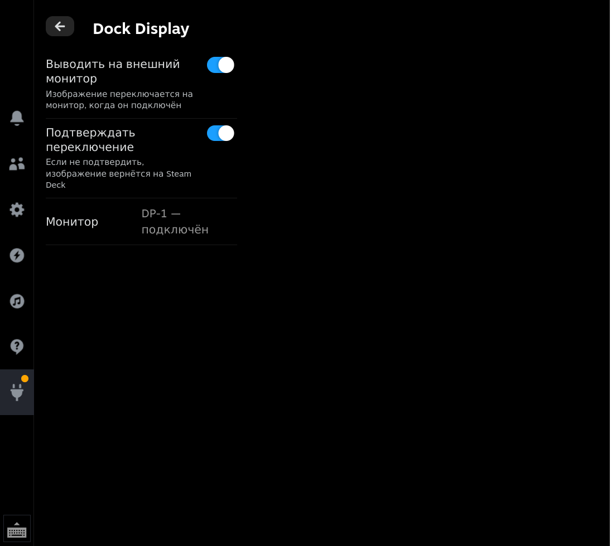

Dock Display
Keep the picture on the Steam Deck screen while docked — use the dock just as a charger.
- One toggle in Quick Access, no cable unplugging
- Auto-revert if the monitor shows nothing
- No flicker while the monitor wakes up
Keep the picture on the Steam Deck screen while docked — use the dock just as a charger.
